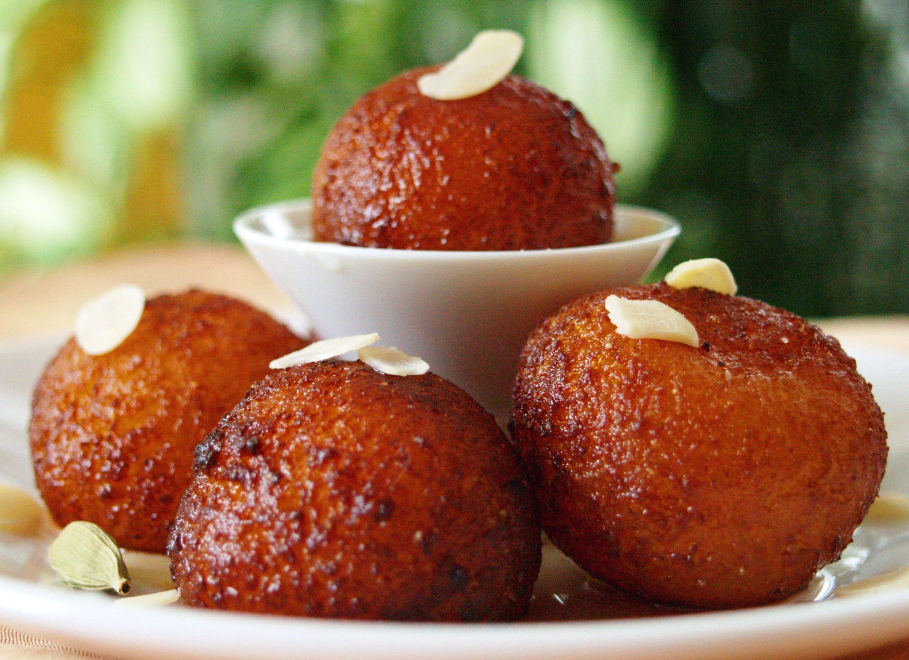
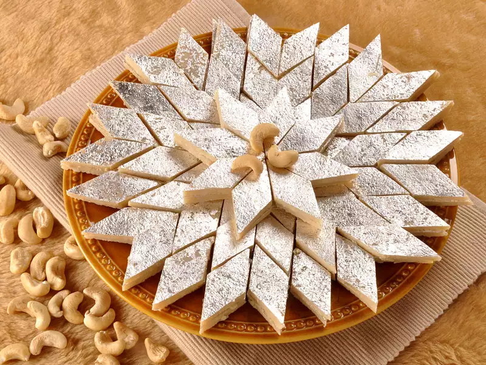
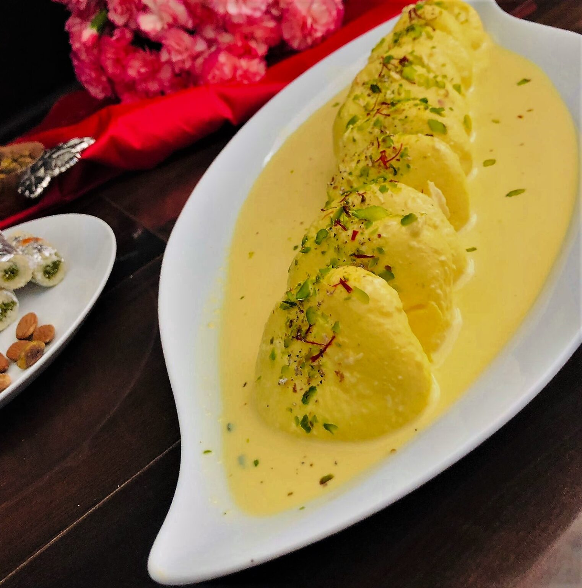

Gulab Jamun
Ingredients
- Sugar
- Bread
- Oil
Process
- Mix bread crumbs with milk to form dough.
- Shape into small balls.
- Deep fry until golden.
- Soak in sugar syrup and serve.

Click here
Kaju Katli
Ingredients
- Cashew
- Sugar
- Milk
Process
- Grind cashews into a fine powder.
- Cook with sugar syrup and milk to form dough.
- Roll and flatten the dough.
- Cut into diamond shapes and serve.

Click here
Rasmalai
Ingredients
- Paneer/Chenna Balls
- Water
- Sugar
- Milk
Process
- Curdle milk, make chenna, and shape into balls.
- Boil balls in sugar syrup and cool.
- Simmer milk with sugar, cardamom, and saffron.
- Soak balls in rabri, chill, and serve.

Click here